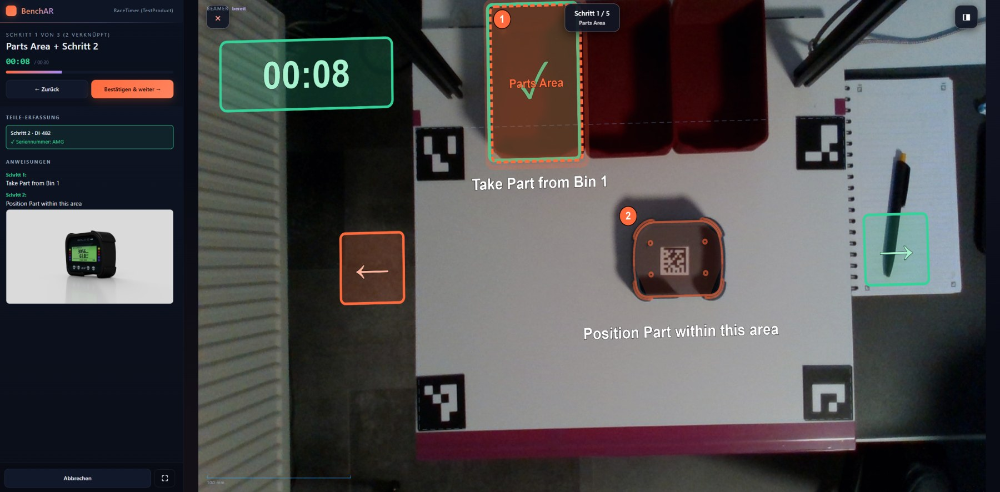

BenchAr blendet Montageanleitungen Schritt für Schritt als Augmented Reality direkt auf den Arbeitstisch ein — dorthin, wo montiert wird. Kein Headset, kein Papier. Das Kernsystem läuft stabil, ist aber noch nicht serienerprobt — genau deshalb suche ich Fertigungsbetriebe als Entwicklungs- und Pilotpartner, die es an ihrem realen Arbeitsplatz mitgestalten und die Richtung mitprägen.

Echter Arbeitsplatz: projizierte Anweisungen, Zonen und Schritt-Führung im Live-Kamerabild — samt Teile-Erfassung je Schritt.
Kein Papier, kein Blick zum Monitor, keine Verwechslung bei Varianten.
Bauteil-Konturen kommen 1:1 aus deiner 2D- oder 3D-CAD-Software — ob AutoCAD, SolidWorks, Fusion oder Inventor: jedes System exportiert DXF. Kein Nachzeichnen, der Beamer zeigt sie an der richtigen Stelle auf dem Tisch.
Eine Kamera entzerrt die Projektion exakt auf die reale Tischfläche. Millimetergenau, einmal eingerichtet.
Der Werker arbeitet jeden Schritt ab und bestätigt ihn. Das System erkennt zuverlässig die Hände am Arbeitsplatz.
Der jüngste Ausbau: Aus geführter Montage wird dokumentierte Montage. Neu entwickelt und technisch geprüft — jetzt zum Erproben mit den ersten Entwicklungs- und Pilotpartnern.
Fertigungsaufträge mit Sachnummer, Seriennummer und BOM. Der Werker wählt den Auftrag, das System bindet den ganzen Durchlauf daran.
Welche Serie oder Charge ging in welches Endprodukt? Jedes verbaute Teil wird beim Bestätigen erfasst — lückenlose Chargen- und Seriennummern-Rückverfolgung.
Falsches Teil in der Hand? Der Schritt bleibt blockiert. Die Erfassung wird gegen die Stückliste des Auftrags geprüft — Fehler werden verhindert, nicht nur protokolliert.
Jeder Schritt landet in einem hash-verketteten Protokoll — nachträgliches Ändern bricht die Kette und wird erkannt. Die Basis für belastbare Dokumentation.
Serie/Charge per DataMatrix/QR über die Kamera — oder ganz ohne Kamera per Handscanner bzw. Tastatur. Günstiger Einstieg, jederzeit erweiterbar.
Jeder Durchlauf liegt als offenes, maschinenlesbares Protokoll vor — bereit für Qualitätsakte, Auswertung und die Übergabe an bestehende Systeme.
Projektionsbasierte Werkerführung gab es bisher fast nur als Enterprise-Plattform — mit Integrationsprojekt, Cloud-Anbindung und entsprechendem Preisschild. BenchAr ist bewusst der leichte Weg.
Ein regulärer Windows-PC, Beamer, Kamera — fertig. Kein Server, keine Cloud-Pflicht: Alle Dienste laufen nur auf der Maschine selbst und sind aus dem Netzwerk gar nicht erreichbar.
Abläufe, Protokolle und Audit-Trail liegen als Dateien auf deinem Rechner — kein fremdes Rechenzentrum, kein Abo-Zwang. Die IT-Freigabe ist ein Gespräch, kein Projekt.
In Tagen startklar statt in Monaten. Ein klarer Preis pro Station — keine Nutzerlizenzen, keine Modulpreise. Für Betriebe, für die eine Enterprise-Lösung nie infrage kam.
Du bekommst die BenchAr-Station als Komplettsystem aus einer Hand — Hardware, Software und Einrichtung, aufeinander abgestimmt und getestet. Danach nur ein planbarer jährlicher Betrag für Pflege und Support. Kein Cloud-Abo, kein Lizenzdschungel, keine versteckten Kosten. Und fällt eine Komponente aus, kommt Ersatz per Vorab-Austausch: dank automatischer Kalibrierung tauschst du sie selbst — ohne Techniker-Einsatz, ohne Stillstand.
BenchAr ist früh dran: Das Kernsystem läuft stabil, ist aber noch nicht serienerprobt. Genau deshalb suche ich Entwicklungspartner statt bloßer Kunden — du bestimmst die Richtung mit, statt ein fertiges Produkt nur zu übernehmen.
Mehr als ein Pilot: Du bekommst ein auf dich zugeschnittenes System zu Entwicklungspartner-Konditionen — und prägst mit, wohin sich BenchAr entwickelt.
Damit jeder Partner die Aufmerksamkeit bekommt, die eine echte Zusammenarbeit braucht, nehme ich bewusst nur wenige Betriebe auf. Die Station kommt komplett aus einer Hand — die Konditionen stelle ich individuell zusammen, passend zum Umfang deines Anwendungsfalls. Konditionen auf Anfrage.
Unkompliziert und ohne Verpflichtung im ersten Schritt.
Du schilderst deine Montage-Aufgabe, ich zeige, was BenchAr heute leisten kann. Ehrlich, ohne Verkaufsdruck.
Wir legen gemeinsam Umfang, Anwendungsfall und Konditionen fest — zugeschnitten auf deinen Bedarf und deinen Montagefall. Die passende Hardware bringe ich als abgestimmtes Komplettpaket mit.
Ich richte das System bei dir ein; gemeinsam passen wir es an und verbessern es anhand deines Feedbacks.
Ich bin Fabian Hühn — Entwickler von BenchAr und Inhaber von filetoform (3D‑Scan, Reverse Engineering, CAD-Design und additive Fertigung). BenchAr entsteht aus genau dieser Praxis: Ich kenne Software und Werkbank. Halterungen und Zubehör der Stationen kommen aus der eigenen Fertigung — und wenn wir über deine Montage sprechen, sprichst du direkt mit dem, der es baut.
Ein kurzer Blick auf einen geführten Durchlauf am realen Arbeitsplatz.
Erzähl mir kurz von deinem Betrieb und deiner Aufgabe — ich melde mich für ein unverbindliches Gespräch.
Lieber direkt? Schreib mir eine E-Mail.